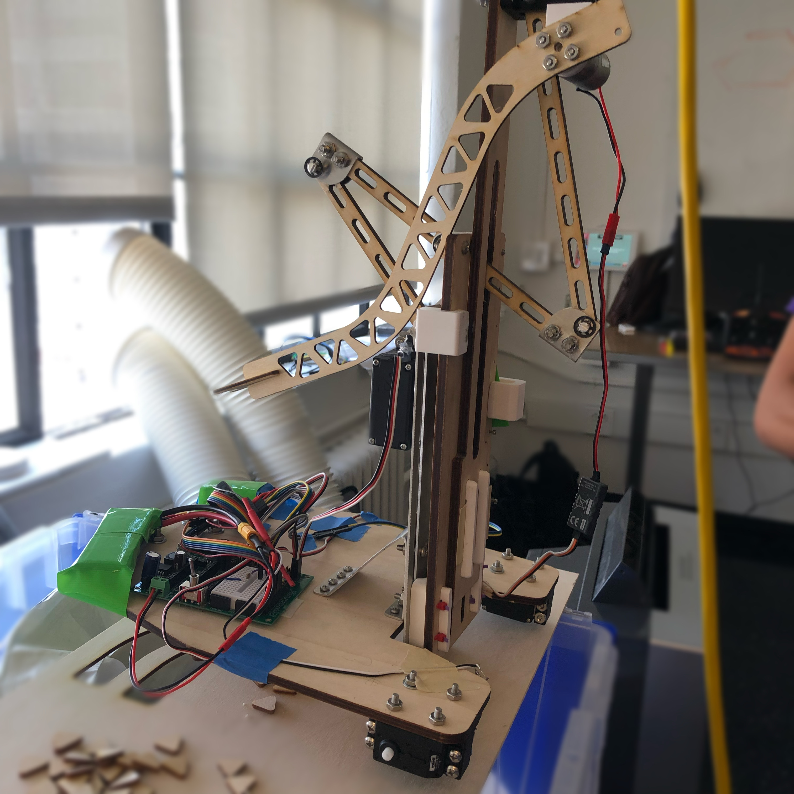
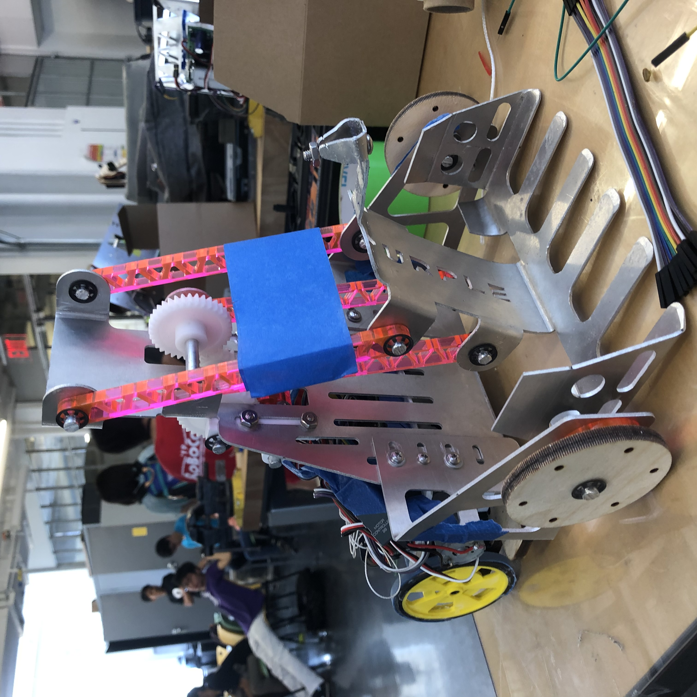
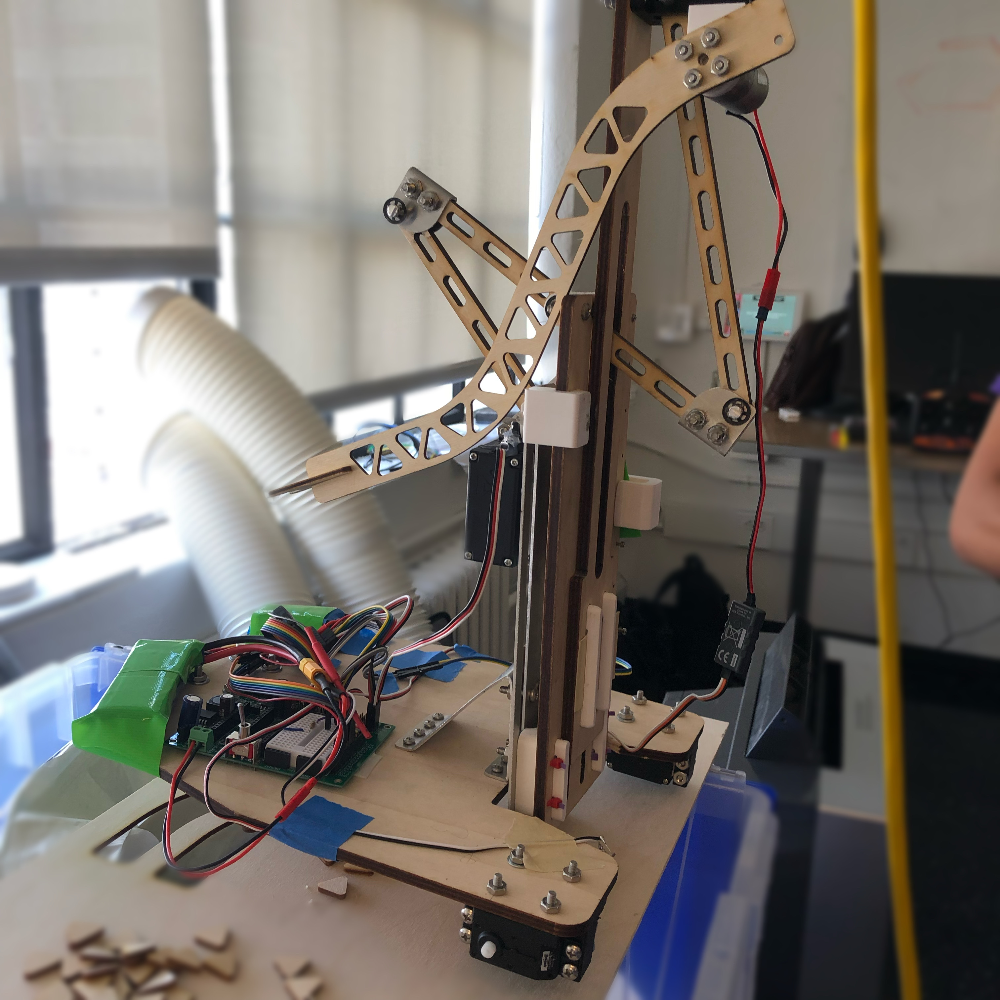
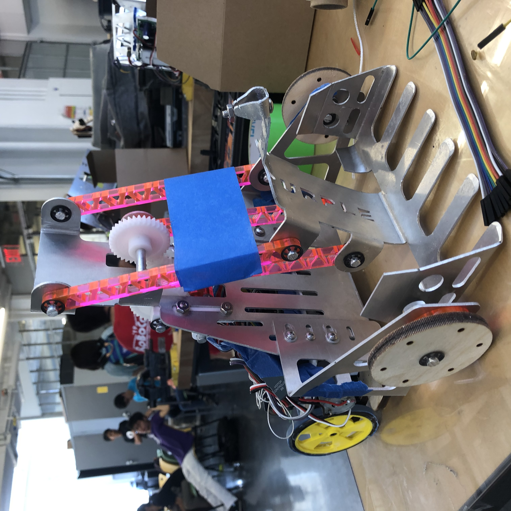
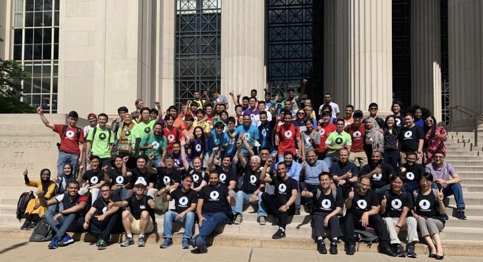

International Robocon
I got the opportunity to participate in the International Robocon hosted at the Massachusetts Institute of Technology as a representative of Seoul National University. I was teamed up with students from various countries to design robots for the competition. The contest was almost identical to what was held in one of the courses at MIT (2.007- Design and Manufacturing); scores were assigned to specific tasks such as picking up rocks, pulling levers, and placing flags.
Our team designed and made two robots that could perform distinctive tasks. One was the robot on the lunar module that has a linkage to reach high to place the flag with a line tracing feature. The other was the robot on the moon that can collect lunar rocks and pull a lever to double the points. Since each member of our team had different skills and backgrounds, we were able to come up with creative mechanisms and designs for our robots.
Through this experience, I was able to strengthen my skills in communicating and collaborating with students of diversity.
 



